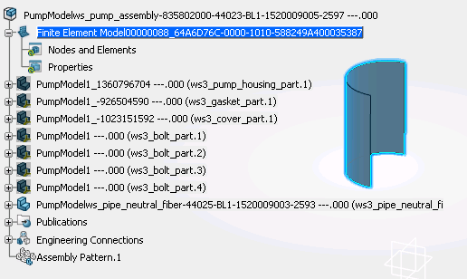
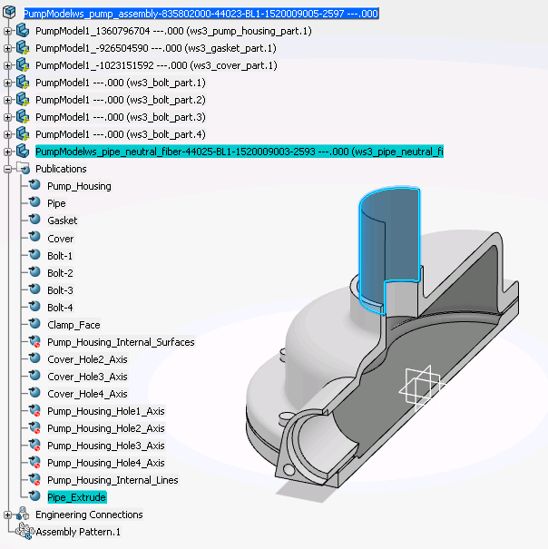
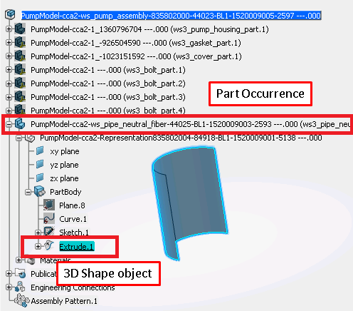
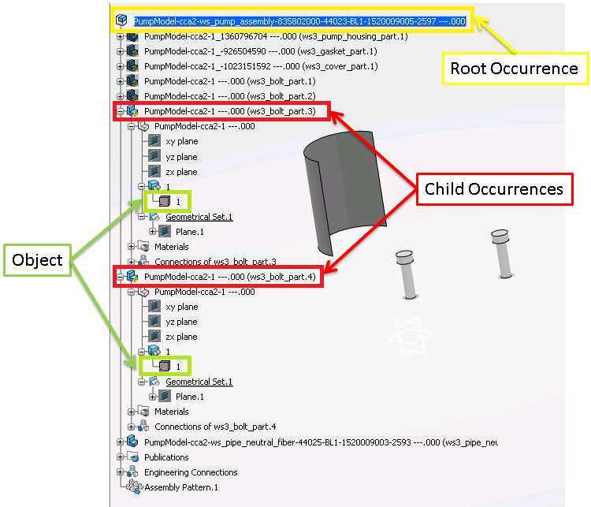

-
Retrieves the simulation and its product
As a first step, the UC retrieves the active editor and retrieves the simulation model.
| Using Publication |
Without Publication |
|
...
myEditor = CATIA.ActiveEditor
myProdService = myEditor.GetService("PLMProductService")
myRootOccurrence = myProdService.RootOccurrence
...
...
myEditor = CATIA.ActiveEditor
myProdService = myEditor.GetService("PLMProductService")
myEntities = myProdService.EditedContent
myEntity = myEntities.Item(1)
MySimulationRoot = myEntity
myModel = MySimulationRoot.Model
oOpenService = CATIA.GetSessionService("PLMOpenService")
oOpenService.PLMOpen (myModel)
myProductEditor = CATIA.ActiveEditor
MyProductService = myProductEditor.GetService("PLMProductService")
myRootOccurrence = MyProductService.RootOccurrence
...
-
Creates link
In this step, the UC retrieves usefull data to compose link to the support.
The created link,
a 3D Shape in this case, is used to associate the Pipe part to the FemRep.

| Using Publication |
Without Publication |
|
...
myPublications = myRootOccurrence.ReferenceRootOccurrenceOf.Publications
myPublication = myPublications.GetItem("Pipe_Extrude")
myLink = myProdService.ComposeLink(myRootOccurrence, None, myPublication)
...
Used publication is aggregated to the part wanted to be associated and the
publication points a 3D Shape element. So it has the exact path of the needed 3D Shape.

...

iMaxCnt = myRootOccurrence.Occurrences.Count
for index in range(1, iMaxCnt+1):
if myRootOccurrence.Occurrences.Item(index).Name == "ws3_pipe_neutral_fiber_part.1":
myPartOccurrence = myRootOccurrence.Occurrences.Item(index)
myPartInstance = myPartOccurrence.InstanceOccurrenceOf
myPartInstanceRef = myPartInstance.ReferenceInstanceOf
myPartRepInstance = myPartInstanceRef.RepInstances.Item(1)
myPartRepInstanceRef = myPartRepInstance.ReferenceInstanceOf
myPart = myPartRepInstanceRef.GetItem("Part")
myPartBody = myPart.MainBody
myExtrude = myPart.FindObjectByName("Extrude.1")
myReference = myPart.CreateReferenceFromObject(myExtrude)
myLink = myProdService.ComposeLink(myPartOccurrence, myPartRepInstance, myReference)
...
Important :
To retrieve the needed path throught the compose link method, correct arguments
have to been gived.
As First argument, it is necessary to give the
part occurence because sometimes the root occurrence could have two same part as
child occurrence. Due to this, created myReference argument is difficult to
locate correctly, even if the correct PartRepInstance is given, the reference
will be the same for each same object. See an example on the image below.

-
Associates representation to FEM
In this step, UC creates the FEM rep and associates the representation to it
| Using Publication |
Without Publication |
|
...
MyPrdRepFactory = myModel.GetItem("SimPrdRepFactory")
MyFemRepRef = MyPrdRepFactory.CreatePrdRep("FEM")
MyFemRepRoot = MyFemRepRef.GetItem("SimFemRoot")
MyFemRepRoot.AddAssociatedRep (myLink)
...
...
MyPrdRepFactory = myModel.GetItem("SimPrdRepFactory")
MyFemRepRef = MyPrdRepFactory.CreatePrdRep("FEM")
MyFemRepRoot = MyFemRepRef.GetItem("SimFemRoot")
MyFemRepRoot.AddAssociatedRep (myLink)
...
Important : When using publication, we do not need to create a link in memory. The publication can directly be setted as argument
MyFemRepRoot.AddAssociatedRep (myPublication)
-
Creates a Shell section
In this step, UC creates shell section
| Using Publication |
Without Publication |
|
...
myPropertiesSet = MyFemRepRoot.GetSet("SimProperties")
myShellSection = myPropertiesSet.Add("SimShellSection")
...
...
myPropertiesSet = MyFemRepRoot.GetSet("SimProperties")
myShellSection = myPropertiesSet.Add("SimShellSection")
...
-
Set the shell section attributes
In this step, UC sets attributes to the created shell section
| Using Publication |
Without Publication |
|
...
myLinkAccess = myShellSection.GetItem("SimLinkAccess")
myLinkAccess.AddLink ("MainSupport", myLink)
myShellSection.UniformThickness = 1.0
...
...
myLinkAccess = myShellSection.GetItem("SimLinkAccess")
myLinkAccess.AddLink ("MainSupport", myLink)
myShellSection.UniformThickness = 1.0
...
Important : When using publication, we do not need to create a link in memory. The publication can directly be setted as argument
myLinkAccess.AddLink ("MainSupport", myPublication)
|